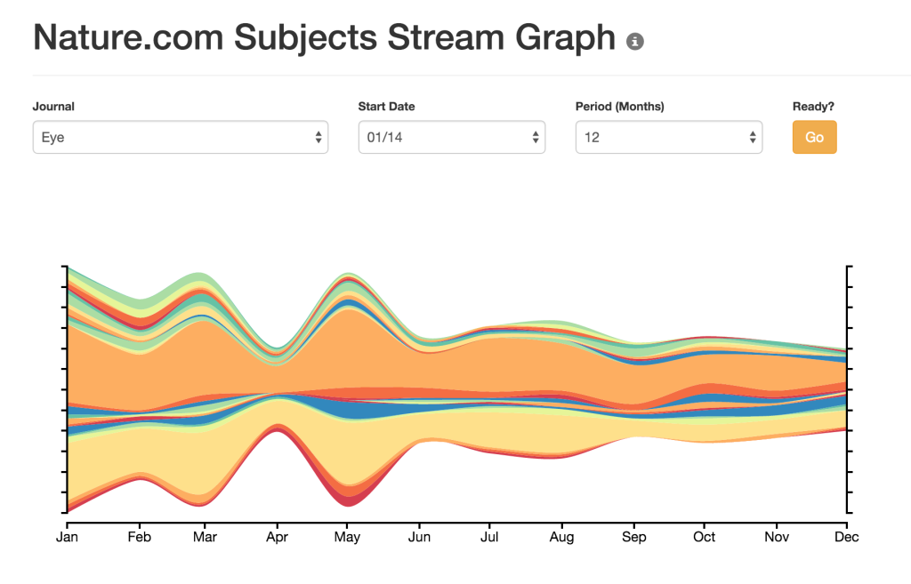

Nature.com Subjects Stream Graph
The nature.com subjects stream graph displays the distribution of content across the subject areas covered by the nature.com portal.
This is an experimental interactive visualization based on a freely available dataset from the nature.com linked data platform, which I've been working on over the last few months. 
{kind=link}
The main visualization provides an overview of selected content within the level 2 disciplines of the NPG Subjects Ontology. By clicking on these, you can explore more specific subdisciplines and their related articles.
For those of you who are not familiar with the Subjects Ontology: this is a categorization of scholarly subject areas used for the indexing of content on nature.com. It includes subject terms of varying levels of specificity, such as Biological Sciences (top level), Cancer (level 2), or B-2 cells (level 7). In total, there are more than 2,500 subject terms organized into a polyhierarchical tree. Starting in 2010, the various journals published on nature.com have adopted the subject ontology to tag their articles (note: different journals started doing this at different times, hence some variations in the graph starting dates).
{kind=link}
{kind=link}
The visualization makes use of various D3.js modules, plus some simple customizations here and there. The hardest part of the work was putting the different page components together to create a more fluent 'narrative' achieved by gradually zooming into the data.
The backend is a Django web application with a relational database. The original dataset is published as RDF, so in order to use the Django APIs, I recreated it as a relational model. This also let me add a few extra data fields containing search indexes (e.g., article counts per month) to make the stream graph load faster.
Comments or suggestions are, as always, very welcome.